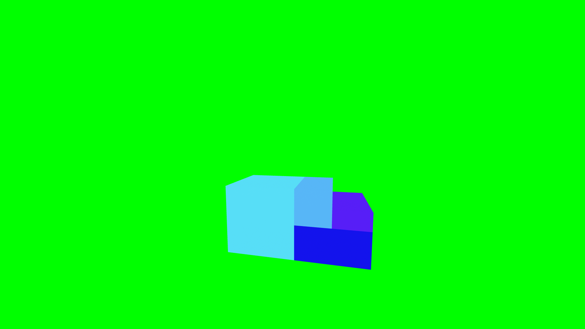
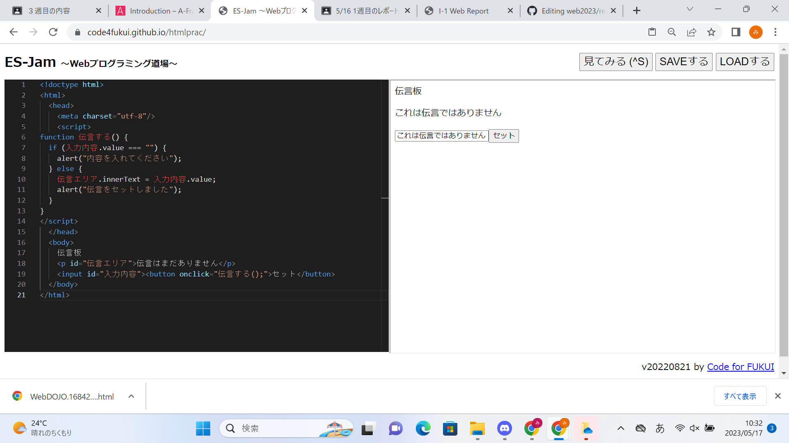

第3週目
3-1 JavaScript体験：VR空間を作る

自作した３次元空間
1.内容
ES-jam webプログラム道場というサイトを使ってVR空間にオブジェクトを設置したりした。
初めに先生が用意していたコードでは、球・立方体・円柱・土台が用意されていた。
そのコードをコピーアンドペーストし、好きなように値を変更した。
上の写真は 1 + 1/2 + 1/4 + 1/8 … ってやりたかったやつ。（2に収束するあれ）
2.感想
なんだかやっと高専っぽいことをしたなと思った。
コピペして値を変更しただけではあるけども、実際にコードに触れるというのはとても楽しかった。
色が16進数であることは知っていたけど、2桁に三原色が一色ずつ割り振られているのは初めて知った。
三原色の値が0~255で256個。16進数が2桁で256通り。なるほど。
3-2 JavaScript体験：伝言プログラムを作る

伝言板
1.内容
同じくプログラミング道場を使い、簡易的な伝言板を作成した。
言語はjava scriptらしい。
資料の通りに書き写していくだけだが、それでも時々何かミスが発生した。
2.感想
初めて本格的なプログラミングをしたが、なかなか楽しかった。
これをきっかけにたまにプログラミングに触れることができたらいいと思った。
ところどころに入る<>の意味も何となく理解できた。
プログラミングはもっと難しいものだと思っていたが、簡易的なものを作るならば、プログラミングもそこまで難しくないため、頑張れば一人でもできるなと思った
そうやって一人でできるのもプログラミングの良さだと思った。
3-3 JavaScriptプログラムの３次元空間の体験
1.内容
VRゴーグルを使用して、仮想空間でボールを投げた。
さっきの謎の球と立方体と円柱がいた。
2.感想
何も考えないままボールを飛ばして眺めていた。
360度の3Dなのに、あれだけの演算をあのクオリティーでできるのはとても素晴らしいと思った。
今ではこんなものを使ってゲームをしたり映像を見られたりできるのだから、本当にすごい時代に生まれてきたなと感じた。
こんなにすごいものがいつかは一般的なものになり、いつかは古いものになるというのは今からしたら考えづらく不思議なことであると思った。